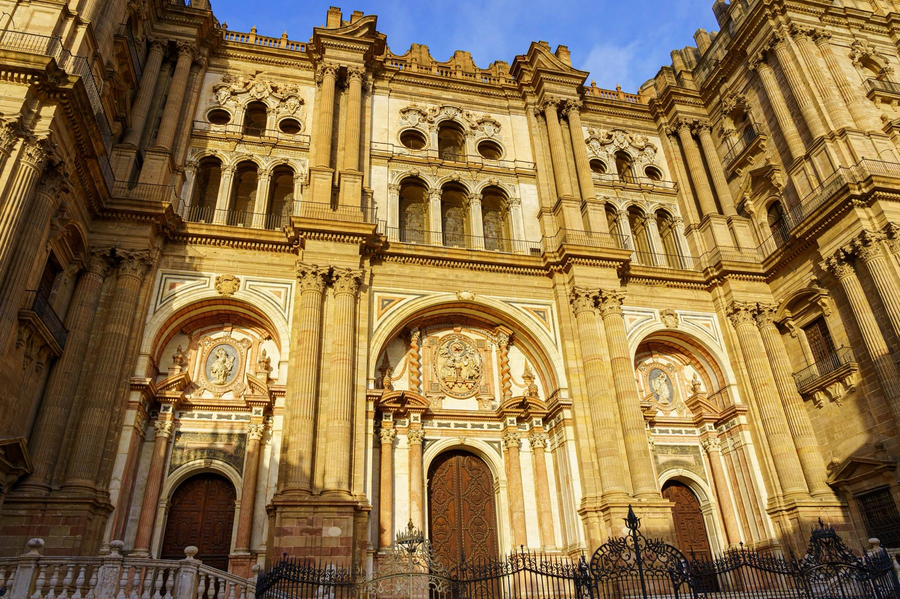
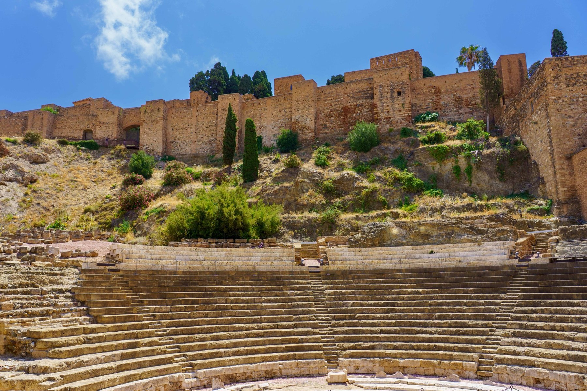
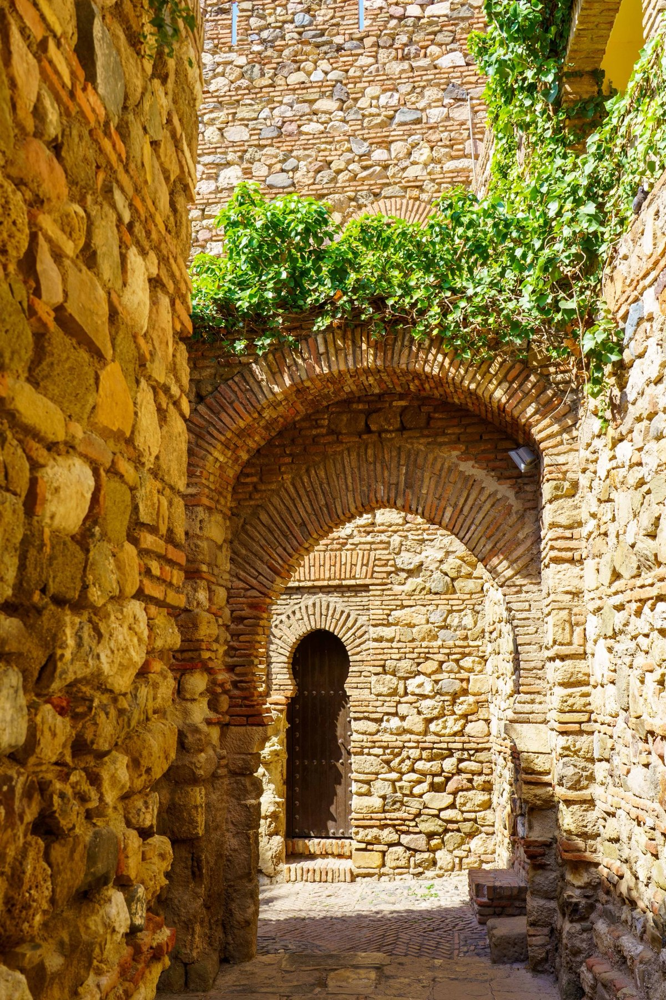
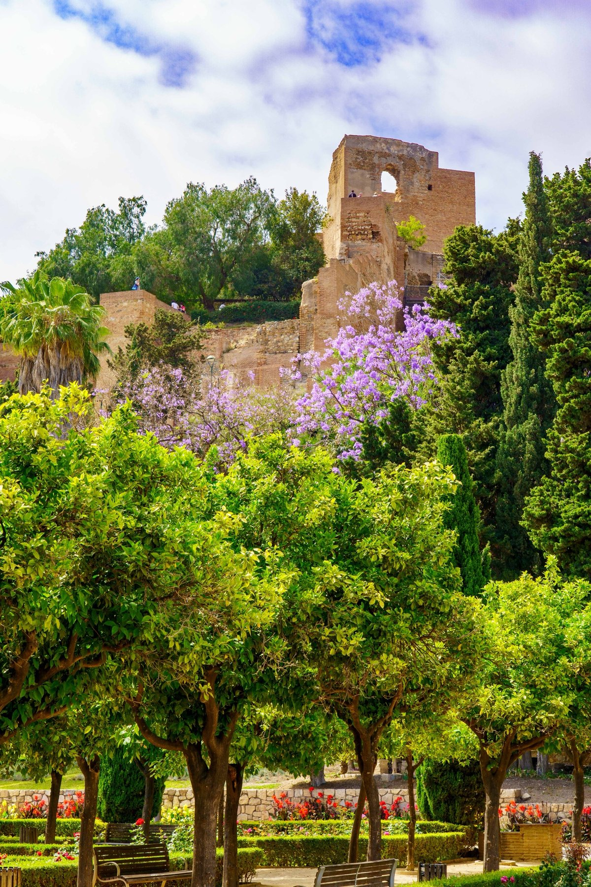
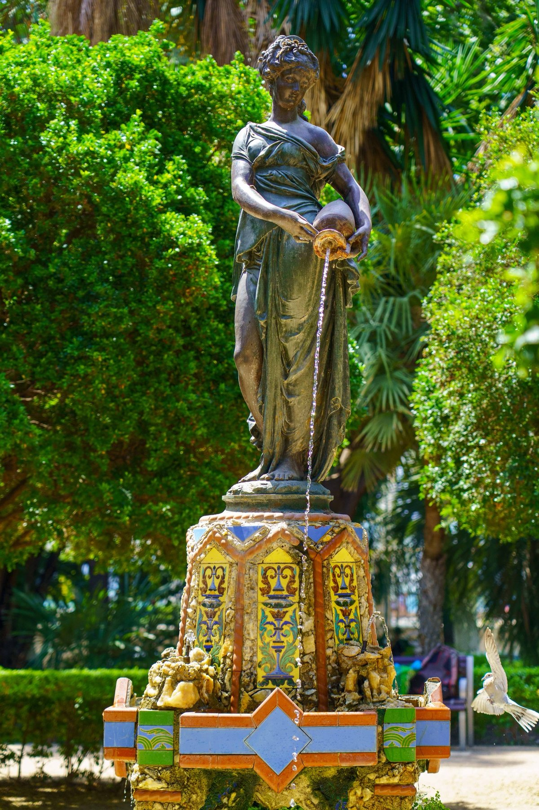
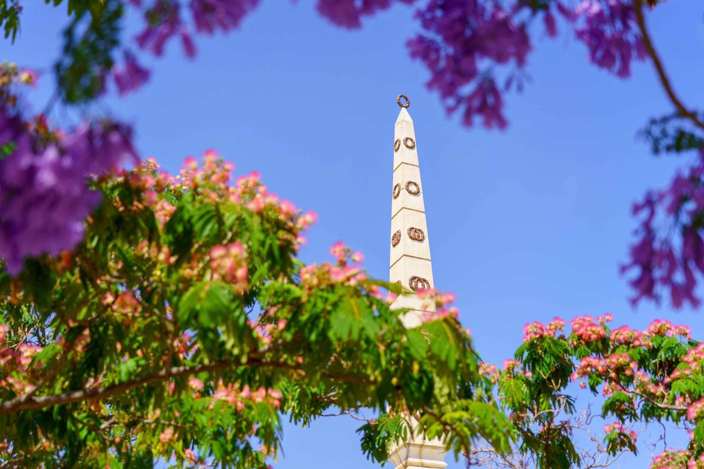
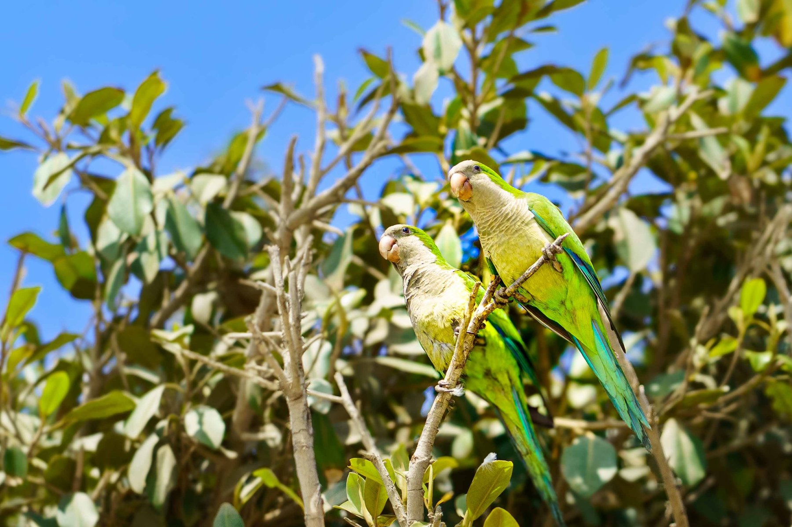
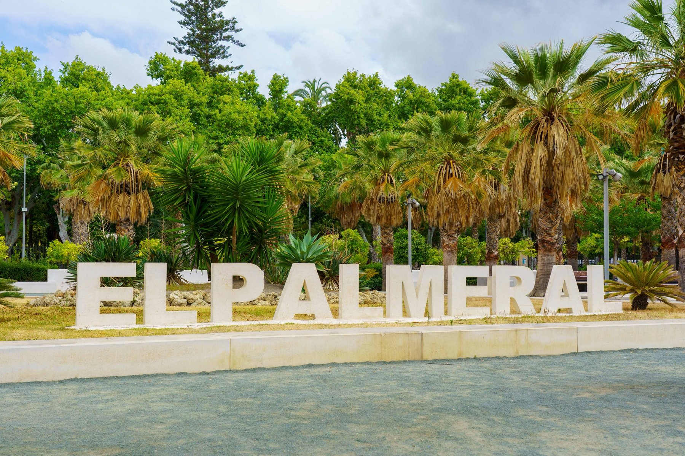
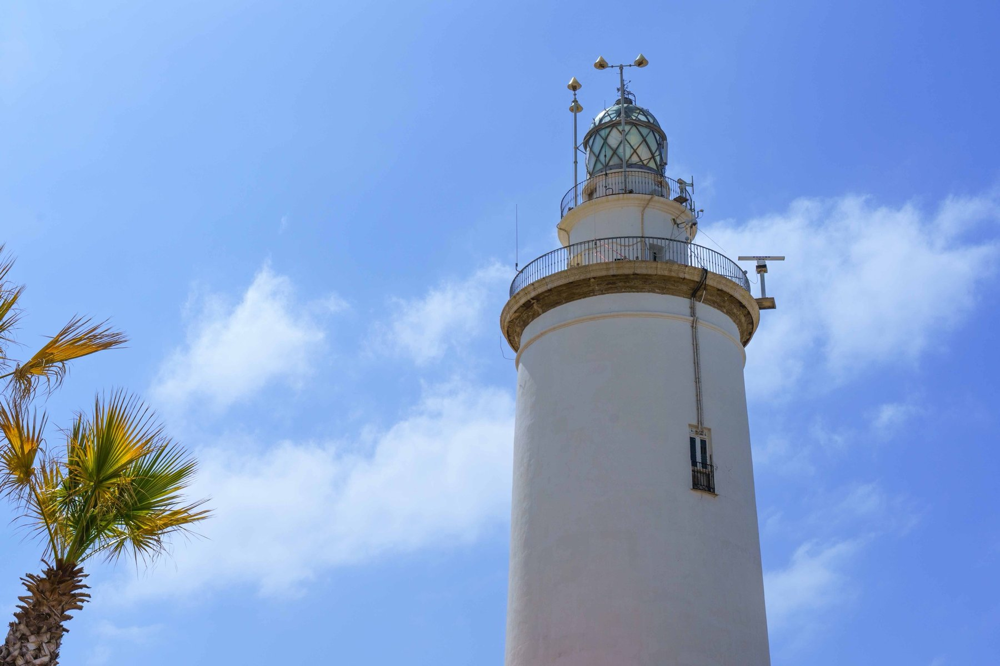

Málaga
Málaga's Baroque cathedral, nicknamed La Manquita for its unfinished second tower, presides over the old town with an ornate facade of stacked columns and carved reliefs. A climb through the Alcazaba's horseshoe-arched passages leads down to the Roman Theatre resting in its shadow, one of the oldest structures in the city and still framed by the fortress walls above. Parque de Málaga runs along the edge of downtown, its jacaranda and mimosa trees blooming purple and pink around an obelisk monument and a bronze fountain statue mid-pour. The walk continues out along the Malagueta waterfront, where a colony of wild monk parakeets chatters in the trees, past the block-letter "El Palmeral" sign, and out to La Farola, the lighthouse marking the end of the promenade and the edge of the city's port.








